IWL_Voorbeeld_5
7 June, 2022
7:39
Hier de situatie van mijn woning 5 jaar geleden, ik gebruikte toen zo'n 1200 m3 gas per jaar, hetgeen aardig overeenkomt met de raming in dit rekenblad.
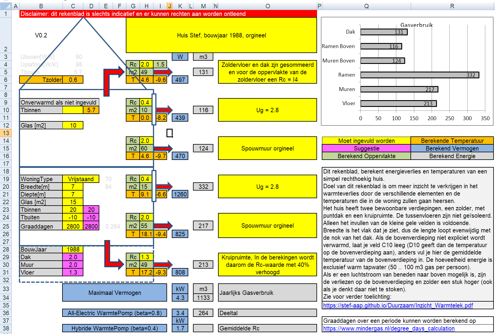
Nu was dit de situatie, waarin al één grote verbetering was aangebracht, die niets heeft gekost: namelijk het sluiten van ramen en deuren op de bovenverdieping van kamers die niet werden gebruikt. Deze maatregel bespaarde mij ruim 200 m3 gas per jaar.
Om de situatie met open ramen en deuren te simuleren, is in onderstaande situatie de Rc_waarde van het glas op de bovenverdieping verlaagd naar 0.01.
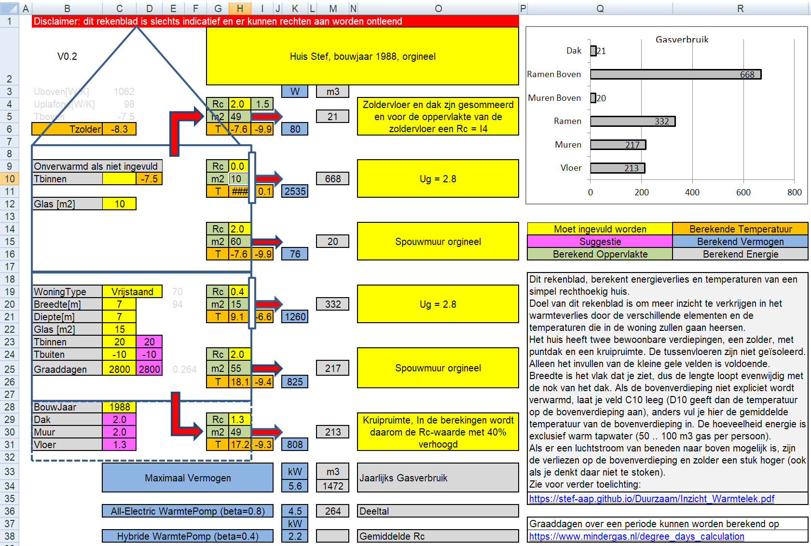
Het model voorspelt dus een verhoging van het gasverbruik met 340 m3 gas per jaar. Dit is weliswaar een stuk hoger dan waargenomen ruim 200 m3, maar het geeft wel duidelijk een richting aan. Als het echt koud was, deden we de ramen op de bovenverdieping wel dicht, hetgeen het verschil goed kan verklaren.
Note: De temperatuur van de ruit wordt niet meer juist weergegeven, omdat de gebruikte formules veronderstellen dat de Rc altijd groter is dan Rsi + Rse.
Verdere maatregelen die heb genomen: verbetering van glas en spouwmuur op de begane grond.
Dit levert volgens het rekenblad een besparing van 300 m3 gas per jaar. Gevoelsmatig klinkt dit niet onwaarschijnlijk, echter is het niet te verifiëren omdat ik ook andere maatregelen heb genomen die nog niet in dit rekenblad mogelijk zijn. Dus volgende keer meer.
Je kunt natuurlijk wel uit de grafische weergave snel zien wat deze maatregel moet zijn, en dat is dus niet de vloer !!
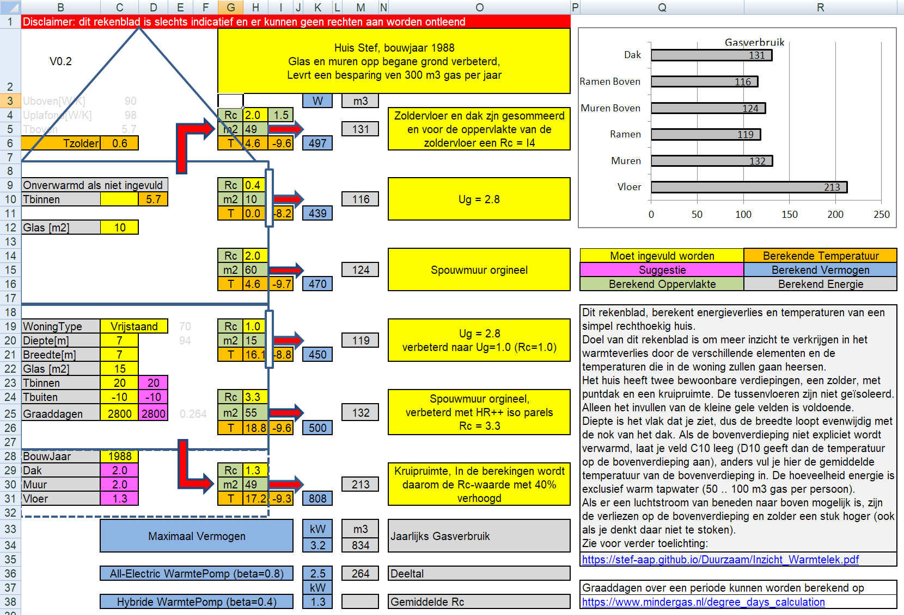
Woning eigenschappen
Hieronder de invoervelden waar de belangrijkste woningeigenschappen (behalve Rc-waarden) moeten worden ingevuld
De meeste parameters spreken voor zichzelf. Een 2/1-kapper is thermisch gezien hetzelfde als een hoekwoning. Een flatwoning wordt momenteel niet ondersteund.
De nok van het dak loopt evenwijdig met de "Breedte".
Het gesuggereerde aantal graaddagen (paarse hok) is een goed gemiddelde. Als je het echte gasverbruik over een bepaalde periode wilt vergelijken met deze berekening, dan moet je het aantal gewogen graaddagen over dezelfde periode en bij de juiste temperaturen berekenen, dit zijn de gemiddelde binnentemperatuur en de stookgrens (zie verderop) |
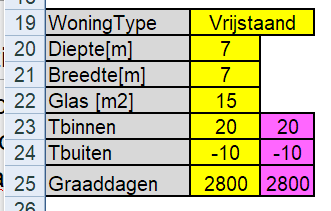
|
De waarde die bij Tbinnen en Tbuiten moeten worden ingevuld, zijn afhankelijk van doel:
Berekenen van de juiste oppervlakte temperaturen voor vergelijking met een warmtebeeld camera | Tbinnen en Tbuiten zijn de op dat moment heersende temperaturen. Bij voorkeur moeten deze worden gemeten met dezelfde warmtebeeldcamera, door de temperatuur van een blokje piepschuim te bepalen. |
Berekenen van de capaciteit van de verwarmingsinstallatie | Tbinnen = de maximaal gewenste binnentemperatuur |
Berekenen van het jaarlijks gasverbruik | Tbinnen en Tbuiten zijn hier niet van belang Graaddagen moet correct worden ingevuld |
Begane grond
Hier zien we een symbolische weergave van de begane grond
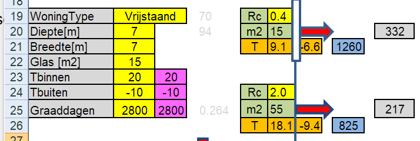
Rechts zien we twee clusters van warmtelekken, onder het warmtelek van de muren en boven dat van de ramen. Hierin moet enkel de Rc waarde van respectievelijk de muren en het glas worden ingevuld (de gele hokjes), de rest wordt door het rekenblad berekend.
In dit geval is de Rc-waarde van de muur 2.0 en die van het glas 0.4. Die van het glas is hier ingevuld als U-waarde, namelijk in cel H19 is ingevoerd "=1/2.8".
Linksonder kun je in cel C29 het bouwjaar van het huis opgeven, waarna er suggesties verschijnen voor de Rc-waarden van de verschillende bouwdelen (deze zijn gebaseerd op het bouwbesluit uit die tijd)
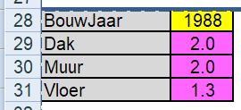
In cel H20 staat het oppervlakte van het glas op de begane grond (rechtstreeks overgenomen van cel C24).
In cel H25 staat de berekende oppervlakte van de buitenmuren op de begane grond. Hierbij worden deuren genegeerd en wordt een hoogte van 2.5 meter verondersteld. Hierbij wordt gebruik gemaakt van hulpveld E19, waarin de omtrek van de woning als functie van het woningtype is vervat:
E19 = ( 2 * Breedte + WoningType * Diepte ) * 2.5
Vervolgens :
H25 = ( WoningType * Diepte + 2 * Breedte ) * 2.5 - GlasOppervlakte = E19 - GlasOppervlakte
De oranje cellen geven de oppervlakte temperaturen van muren en ramen aan, zoals je ze ook zult zien met bijvoorbeeld een warmtebeeld camera. Wil je deze waarde echt met een warmtebeeld camera vergelijken of wil je bewoners laten zien hoeveel koudestraling van een slechte ruit afkomt, dan moet je de binnen- en buitentemperatuur in cellen C23 en C24 op iets realistischere waarden instellen. Voor het berekenen van de temperaturen worden de volgende formules gebruikt (Rsi en Rse zijn de forfaitaire overgangsweerstanden uit het bouwbesluit)
Tmuurbuiten = Tbuiten + (Tbinnen - Tbuiten ) * Rse / Rc
Tmuurbinnen = Tbinnen - (Tbinnen - Tbuiten ) * Rsi / Rc
Rechts het blauwe hok geeft het (maximaal) vernogen (in Watt) dat dit bouwelement vereist bij deze omstandigheden. Deze rij wordt onderaan gesommeerd. Wil je het benodigd vermogen van een verwarmingsinstallatie bepalen, dan moet je de buitentemperatuur op -10 graden Celsius instellen en de binnentemperatuur op 20 of 21 graden Celsius.
Vermogen = ( Tbinnen - Tbuiten ) * Oppervlakte / Rc
Ten slotte het grijze veld rechts geeft de jaarlijkse hoeveel gas die door dit bouwelement wordt verstookt. Wil je echt het echte verbruik vergelijken met deze berekening, dan moet de graaddagen berekenen (zie verderop) over exact dezelfde periode als waarover je het echte gasverbruik kent. Temperaturen zijn hierbij niet van belang, want die worden vervat in de graaddagen.
Gasverbruik = 24 * Graaddagen * Oppervlakte / ( Rc * GasEnergie )
24 is het aantal uren in een dag, GasEnergie (8500) komt van de calorische waarde van het gas en het ketelrendement (zie verderop).
Ruimte onder het huis
Momenteel is de ruimte onder het huis vast gedefinieerd als matig geventileerde kruipruimte.
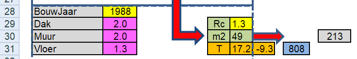
De berekening is een simplificatie die in veel gevallen redelijk zal opgaan: de echte Rc-waarde wordt met 40% verhoogd om het warmteverlies en de oppervlakte temperaturen te berekenen.
Bovenverdieping
Voor de bovenverdieping moet de oppervlakte van het glas apart worden ingevuld.
Als er op de bovenverdieping niet (direct) gestookt wordt, moet je het veld C10 leeglaten. Het rekenblad berekent dan welke temperatuur er op de bovenverdieping zal heersen: cel D10.
Het is goed om zich te realiseren dat de betonnen vloeren van huizen thermisch zo lek zijn als een mandje en dus nagenoeg iedereen de bovenverdieping direct of indirect stookt.
Stook je "een beetje" op de bovenverdieping, vul dan in cel C10 de actuele temperatuur in (dus bijv een graad of 5 lager dan de benedenverdieping.
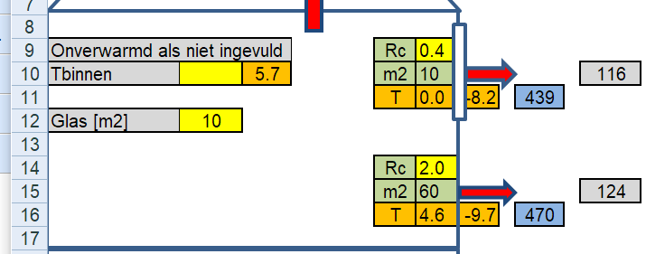
De formules om het gasverbruik te berekenen zijn voor de bovenverdieping afwijkend, immers we kunnen niet het aantal graaddagen gebruiken dat voor de begane grond geldt.
Allereerst is E25 een hulpveld dat de verhouding tussen Gasverbruik en Vermogen bepaald
E25 = Gasverbruik_Muur_Begane_Grond / Vermogen_Muur_Begane_Grond = Gasverbruik_1 / P_1
Vervolgens kunnen we deze verhouding gebruiken om het gasverbruik op bovenverdieping te bepalen:
Gasverbruik = E25 * Vermogen
Dak
Momenteel wordt alleen een schuin dak ondersteunt. De nok van het dak loopt evenwijdig aan de "Diepte" van het huis. De breedte is dus de dimensie die je ook op het scherm ziet.
De zoldervloer wordt verondersteld niet geïsoleerd te zijn (Rc=0.5).
De Rc-waarde die in het gele hok wordt ingevuld is de Rc-waarde van het puntdak.
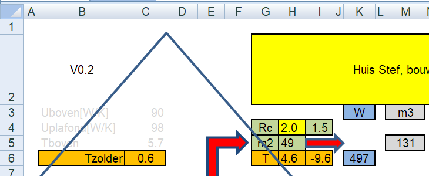
De helling van het dak wordt 45 graden verondersteld. De meeste daken hebben in Nederland een wat kleinere hellingshoek. We rekenen dus wat pessimistischer dan misschien reëel, maar we moeten ons ook realiseren dat er bij een dak en bij de muur-dak aansluitingen allerlei extra lekken zijn, die we op deze manier incorporeren.
In dit geval is de Rc-waarde van het puntdak Rc=2.0, die van de zoldervloer Rc=0.5, terwijl de effectieve Rc-waarde van puntdak plus zoldervloer slechts 1.5 bedraagt (cel I4). Het is goed om te beseffen waardoor dit komt en waardoor je dus ook goed begrijpt dan het isoleren van de zoldervloer effectiever is dan het isoleren van het puntdak. Omdat de oppervlakte van het puntdak (inclusief zij-driehoeken) een stuk groter is dan de oppervlakte van de zoldervloer, zal het warmtelek relatief ook groter zijn.
In cel E20 staat de oppervlakte van het dak als funnctie van het woningtype:
E20 = DakOppervlakte = WoningType * Diepte^2 / 4 + Diepte * Breedte * 2^0.5
In cel H5 staat het oppervlakte van de zoldervloer.
Voor de berekening van het warmteverlies, gaan we de oppervlakte van het dak (E20) terugrekenen naar het oppervlakte van de zoldervloer (H5). Omdat het dak een groter oppervlakte heeft dan de zoldervloer, wordt de effectieve Rc van het dak dus evenredig met de oppervlakte verhoudingen verlaagd (een groter oppervlakte geeft meer warmteverlies)
Rc_Schuindak = Rc_Dak * Opp_Zoldervloer / Opp_dak
Daarbij dient de Rc waarde van de zoldervloer (vast ingesteld op 0.5) te worden opgeteld om de verliezen door het dak te berekenen, de resulterende Rc waarde staat in cel I4.
I4 = Rc_Dak_Effectief = 0.5 * Rc_Dak * Opp_Zoldervloer / Opp_dak
De temperatuur van het plafond van de bovenverdieping staat dus in cel H6.
De temperatuur van de zolder staat in cel C6.
Kieren
Op basis van het bouwjaar van de woning wordt de bouwjaarcorrectiefactor voor de luchtdoorlatendheid bepaald, deze wordt vermenigvuldigd met 2 keer het vloeroppervlakte van de begane grond, teneinde de V10 [l/s] te berekenen. Het geschatte energieverbruik wordt bepaald door de NEN7120 die een forfaitaire waarde van 1.04 m3/l/s heeft vastgesteld.
In cel D25 staat de berekende V10 op basis van het bouwjaar.
Als een echte V10 bekend is, bijv op basis van een blowerdoortest, dan kan deze worden ingevuld in cel C25 en overruled de waarde van D25 in de energieberekeningen.
| 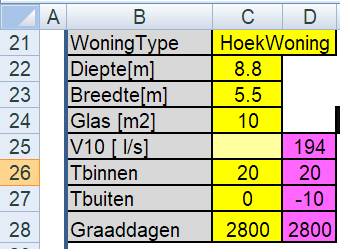
|
Grafische weergave Gasverbruik
Rechtsboven is nog een grafische weergave van het gasverbruik per bouw element, zodat je eenvoudig kunt zien waar het meest bespaard kan worden.
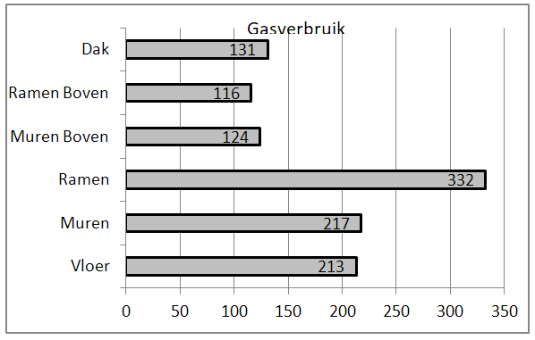
We zien dat, in dit geval, het grootste warmtelek wordt veroorzaakt door de ramen op de begane grond. Als we beseffen dat hier Ug=2.8 en dit simpel te vervangen is door HR++ glas met dezelfde dikte en een Ug=1.0 (of zelfs Ug=0.8) dan mag het duidelijk zijn dat dit een van de meest effectieve maatregelen is.
Wat we hier ook zien is dat de som van de drie bovenste balken (dat wat weglekt door de onverwarmde ruimten) behoorlijk hoog is. Een tweede zeer effectieve maatregel is dus het isoleren van de tussenvloer, waarbij men zich vervolgens wel moet realiseren dat het een stuk kouder wordt op de bovenverdieping.
Sommatie
Onderaan staan de capaciteiten en gasverbuik van het gehele huis. Hieruit kan het benodigde vermogen avn een CV-ketel of warmtepomp worden afgeleid.
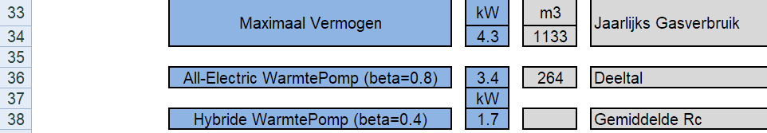
Het "Deeltal" is het beroemde getal (variërend tussen 188 en 270), dat door veel warmtepomp installateurs en fabrikanten wordt gebruikt om op een zeer simpele manier het vermogen van een (hybride) warmtepomp in een bestaande woning te bepalen.
Vermogen Warmtwpomp [ kW] = ( Gasverbruik - warm_Tapwater) / Deeltal
Gemiddelde Rc waarde was bedoeld voor EPC berekeningen, maar zal vermoedelijk verdwijnen en tzt vervangen worden door de BENG-eisen.
GasEnergie
Gasverbruik:
Gasverbruik = 24 * Graaddagen * Opp / ( Rc * GasEnergie )
Waarbij:
GasEnergie = Calorische_Waarde * Rendement_CV_ketel = 8500 [Wh] = 8.5 [kWh]
Calorische waarde (bovenwaarde): 1m3 gas = 9.7 kWh (afgerond 10)
Rendement CV-ketel = 85%
Stookgrens
Als de warmtetraagheid van een woning groter wordt, dan wordt de stookgrens lager, zie bijvoorbeeld:
Pasted from <https://umeter.nl/over-graaddagen/>
<quote>
Ook is het mogelijk om de zogenaamde stookgrens in te stellen. Doordat gebouwen warmte opnemen en later weer afgeven, zal de verwarming in het voor- en najaar niet direct aangaan ondanks dat de etmaalgemiddelde buitentemperatuur lager is dan de etmaalgemiddelde binnentemperatuur. Door de stookgrens bijvoorbeeld in te stellen op 15,5 °C worden graaddagen alleen meegeteld indien de etmaalgemiddelde buitentemperatuur lager is dan deze grenswaarde. Een lagere waarde voor de stookgrens leidt tot een verhoging van het aantal m3 gas per graaddag in het voor- en najaar
Een betere isolatie aan de buitenkant van een grotere warmtecapaciteit verlaagt de stookgrens. Dus nieuwe woningen zullen in het algemeen een lagere stookgrens hebben, deze kan wel dalen tot 10 graden Celsius. Het aantal graaddagen kan daardoor wel met 15% dalen.
<end quote>
In onderstaande tabel is de stookgrens (bij een binnentemperatuur van 17 en 18 graden Celsiius) als functie van de bouwjaar van het huis weergegeven. We zien dat de standaard instelling van 18 graden Celsius alleen geldt voor huizen tot 1975. Het aantal graaddagen is berekend via https://www.mindergas.nl/degree_days_calculation, waarbij als locatie Volkel en als periode het jaar 2021 is genomen.
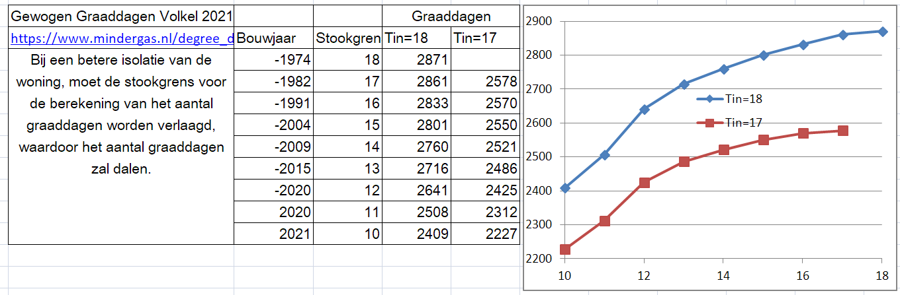
Gegevens zijn verkregen uit de volgende tabel (regel "Verwarmen tot buitentemp." ) : https://warmtepomp-tips.nl/media/kengetallen/Rekenmodel_vollasturen_maand_warmtepomp_woning_nl_bouwjaar_v_april2021.png
Rsi-Rse
Bij de thermische overgang van een vast stof naar lucht is er een dun luchtlaagje, dat stil staat en waarover een temperatuurgradient (temperatuurverschil) ontstaat. Rekenkundig is dit te beschrijven door een overgangsweerstand.
Rsi = de overgangsweerstand aan de binnenzijde ( i=interior)
Rse = de overgangsweerstand aan de buitenzijde ( e=exterior)
Deze weerstand is mede afhankelijk van de hoeveelheid geforceerde luchtstroming (wind) en dat verklaart waarom de Rse altijd kleiner is dan de Rsi. Dit betekent ook dat een praktische meting van de oppervlakte temperaturen wel wat kan afwijken, immers als het hard waait zal de Rse kleiner zijn dan in onderstaande figuur is weergegeven en bij windstil weer zal het omgekeerde gelden.
Ook is deze weerstand afhankelijk van de oriëntatie van het oppervlak.
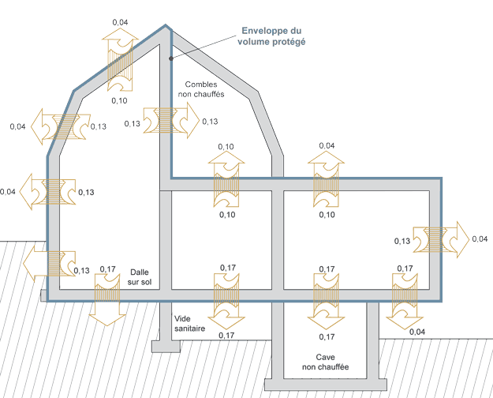
Berekening Temperaturen Boven
Voor het berekenen van de temperaturen boven (als er niet gestookt wordt), is het volgende model gehanteerd.
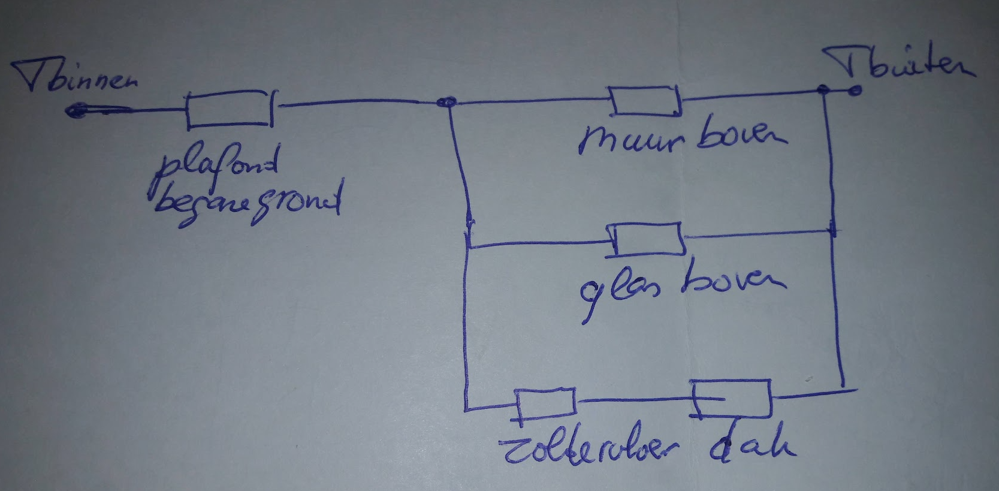
Allereerst wordt in hulpcel C3 de oppervlakte genormeerde U-waarde van alles wat zich boven vloer van de eerste verdieping bevindt (het rechterdeel van bovenstaande tekening)
C3 = Opp_Muur / Rc_Muur + Opp_Glas / Rc_Glas + Opp_Zolder / Rc_Dak_Effectief
In hulpcel C4 is de oppervlakte genormeerde U-waarde van het plafond van de begane grond
C4 = Opp_Plafond / Rc_Plafond
Vervolgens kan de temperatuur van de bovenverdieping worden berekend:
Tboven = Tbinnen - (Tbinen - Tbuiten ) * (1/C4) / ( 1/C4 + 1/C3)
En de temperatuur van de zolder, die staat in cel D3:
Tzolder = Tboven - (Tboven - Tbuiten) * R_zolder / R_dak_Effectief
Versies
SM, juni 2022
Inzicht WarmteLek Woningen.
{kind=link}